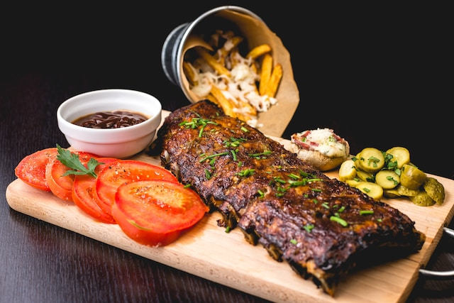
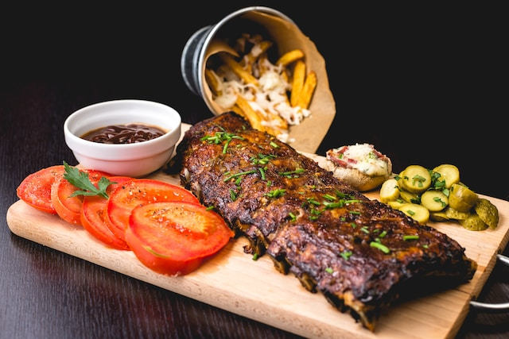

Kings Hotel offers a variety of room types and suites to choose from, all of which are spacious and well-appointed with modern amenities. Each room features a private balcony or terrace with stunning views of the ocean or the gardens.
Standard Room: Our Standard Rooms are perfect for couples or business travelers. They feature a king-size bed or two twin beds, a work desk, a flat-screen TV, and a private bathroom with a shower/bathtub combination.
Superior Room: Our Superior Rooms are more spacious than our Standard Rooms and offer additional amenities such as a minibar, a coffee maker, and a separate seating area.
Family Room: Our Family Rooms are perfect for families with children. They feature two king-size beds or two twin beds and a bunk bed, a work desk, a flat-screen TV, and a private bathroom with a shower/bathtub combination.
Suite: Our Suites are ideal for guests who want the ultimate in luxury and comfort. They feature a separate bedroom and living area, a private balcony or terrace with stunning views, a minibar, a coffee maker, and a spacious bathroom with a separate shower and bathtub.
Kings Hotel is committed to providing guests with the best possible experience, and we offer a variety of room types and amenities to choose from to meet the needs of every traveler. Whether you are looking for a comfortable and affordable place to stay or a luxurious suite with all the bells and whistles, Kings Hotel has something to offer everyone.
The room is where you will spend your time relaxing after a long day outside. Of course, it has to be comfortable and per your needs, and 5-star hotels make sure you get no reason to complain. A lot of high-rated hotels provide facilities like electric safe, laundry bags, stocked mini-bar, freebie snacks and drinks, full-length mirror with proper lighting, Wi-Fi, comfortable sitting area, blackout shades, bathrobes, slippers, luxury toiletries, fluffy towels, F&B room service, comfortable bed and so on.
 

Kings Hotel offers a variety of food and beverage options to suit the needs of every guest. Our restaurants and bars offer a wide range of cuisines, from traditional Kenyan dishes to international fare. We also have a variety of drinks available, including cocktails, mocktails, wines, and beers.
Our chefs are passionate about food, and they use fresh, local ingredients to create delicious and innovative dishes. Our restaurants offer a variety of dining experiences, from casual to fine dining.
Our bars are the perfect place to relax and unwind with a drink. We offer a wide range of drinks to choose from, including cocktails, mocktails, wines, and beers. We also have a variety of snacks and appetizers available.
No matter what you are in the mood for, Kings Hotel has something to offer. We are committed to providing our guests with the best possible dining experience.
Kings Hotel has a variety of bars to choose from, each with its own unique atmosphere and drinks menu. Here is a brief overview of our bars:
The Pool Bar is the perfect place to relax and unwind with a drink after a day at the pool or beach. The bar offers a variety of cocktails, mocktails, wines, and beers. There is also a food menu with a selection of snacks and appetizers.
The Lobby Bar is a sophisticated and elegant bar located in the hotel lobby. The bar offers a wide range of cocktails, wines, and spirits. It is also the perfect place to enjoy a cup of coffee or tea in the afternoon.
The Sports Bar is the perfect place to watch your favorite sports game with a drink in hand. The bar has multiple TVs and offers a variety of beers and cocktails. There is also a food menu with a selection of burgers, fries, and other pub fare.
The Rooftop Bar offers stunning views of the Indian Ocean and the Mombasa skyline. The bar is a great place to enjoy a sunset cocktail or a nightcap. The bar also has a food menu with a selection of light bites and appetizers.
No matter what you are in the mood for, Kings Hotel has a bar to suit your needs. Our bars offer a wide range of drinks and food to choose from, and our bartenders are always happy to make a recommendation. We hope you will visit one of our bars during your stay at Kings Hotel. We look forward to serving you!


Kings Hotel's gym is the perfect place to stay fit during your stay. The gym is equipped with state-of-the-art fitness equipment, including treadmills, ellipticals, stationary bikes, weight machines, and free weights. The gym also offers a variety of fitness classes, such as yoga, Pilates, and aerobics. The gym is open to guests 24 hours a day, so you can work out at your convenience. The gym staff is always happy to help you create a workout routine or answer any questions you may have.
Kings Hotel's recreational center offers a variety of activities for guests of all ages. The recreational center includes multiple swimming pools, tennis courts, a basketball court, a volleyball court, a game room, and a children's play area. The swimming pools are the perfect place to cool off on a hot day or relax after a long day of sightseeing. The tennis courts are available for guest use on a first-come, first-served basis. The basketball court and volleyball court are also available for guest use. The game room is a great place to have fun with friends or family. The game room has a variety of games, including arcade games, board games, and video games. The children's play area has a variety of toys and activities for children of all ages.
Kings Hotel is the perfect place to stay fit and have fun during your vacation. The gym and recreational center offer a variety of amenities and activities for guests of all ages. Whether you are looking to get a workout in, play a game of tennis, or relax by the pool, Kings Hotel has something for everyone.